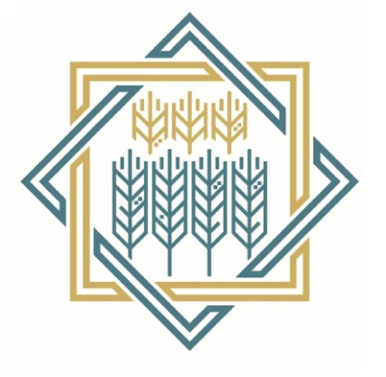

Zakat Fund is a Russian charitable organization that specializes in collecting and distributing Zakat. The fund aims to help those in need and support various social projects both in Russia and abroad.
Donate
The Insan Charity Fund is dedicated to collecting and distributing Zakat and other forms of charity in Russia. The fund focuses on providing assistance to underprivileged families and supporting educational and social projects.
Donate

The Alabuga Charity Fund is engaged in collecting and distributing Zakat and other forms of charity in Russia. The fund provides assistance to needy families and supports educational and social projects.
Donate